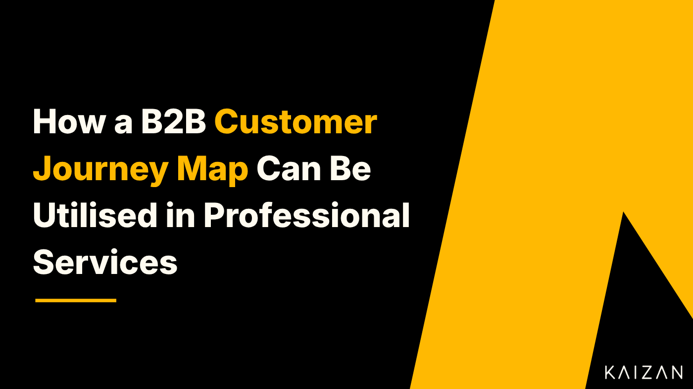

How a B2B Customer Journey Map can be utilised in Professional Services

A customer journey map is a powerful tool for understanding your clients’ experiences. By visualising the steps that a client takes when interacting with your company, it can help you to understand and improve the service you provide.
Why Is Customer Journey Mapping Important?
According to the Aberdeen Group, companies that actively manage the customer journey see their return on marketing investment increase by 24.9% year-on-year while reducing service costs by 21.2%. Customer journey mapping is an important tool as it allows businesses to see the experience from the clients’s perspective. This helps businesses identify flaws in the client experience and improve their processes.
The question of perspective is a critical one. People working inside a business often have a strong grasp on what their processes look like from the inside. They understand why processes work the way they do, which ones look efficient to them, and how it feels to work with the process.
Customer journey mapping flips this perspective, forcing businesses and their teams to consider the experience from a client’s point of view. This leads to a clearer grasp of the client journey, understanding their needs and wants. The map goes to the outer boundaries of the process, from a client hearing about the company to the point where they complete a purchase, instead of only considering the time where they are in contact with your team.
As well as providing a change of perspective, customer journey mapping can create a valuable tool for your teams. The maps themselves become a visual reference that employees can use as a reminder of the client experience. Concerned about why fewer clients are calling about the latest product upgrade? Then look at the customer journey map to see where they might be giving up.
By understanding the clients’s journey, businesses can find ways to improve their processes, as well as develop targeted marketing and sales strategies that are more likely to succeed.
What Are the Benefits of Customer Journey Mapping?
Customer journey mapping provides a more objective view of the client journey than the usual insider perspectives. By taking a journey through the client lifecycle, it increases understanding and identifies areas that need to be improved.
This brings a number of benefits:
Optimise the onboarding process and client lifecycle
The processes for acquiring and managing new clients are seldom as efficient as they could be. Steps are included because they seem correct to the business or because they used to work, without proper consideration for their usefulness in bringing on board clients in current circumstances.
Customer journey mapping highlights steps in the process that don’t benefit the client or optimise the client experience. You can then remove these steps. This is also an opportunity to put the process in a rational order, to improve the overall experience.
A focus on the client experience draws attention to inbound marketing, how it can be improved, and how it connects to the other processes within the business. This can lead to more efficient lead generation without the extra effort of outbound marketing.
Improve the client experience and touchpoints
80% of customers consider the experience of dealing with a company as important as the product the company provides. Customer journey mapping puts emphasis on that experience and helps you to improve it. By considering the client’s feelings, you can build a process that’s designed for them.
Mapping a customer journey is also useful for identifying and eliminating the specific touchpoints that lose your company clients. 33% of customers consider changing brands after a single bad experience, so identifying, understanding, and eliminating those negative experiences is invaluable.
Increase client satisfaction and client retention
Customer journey mapping isn’t just about bringing new clients on board, it’s about keeping your current clients happy.
A better client experience means greater client satisfaction, which increases client retention. Mapping out the journey for clients with different experiences lets you shape the journey to their needs. A more personalised range of customer journeys will leave your clients feeling like they are prioritised and working with a client focussed partner.
The more effective process you can build from customer mapping will improve client experiences, satisfaction, and retention. So how do you go about creating this map?
How to Create a Customer Journey Map
A customer journey map is a visual artefact that shows the different stages a customer goes through when engaging with a company, from the initial awareness stage to the final purchase and post-purchase stages. It can be a flow chart, an illustrated diagram, or a process map. However it looks visually, the steps in creating it are the same:
Recruit the right participants.
Define your theoretical client and target audience persona.
Gather data.
Map the client touchpoints.
Identify client actions.
Map the client’s needs and emotions.
Identify pain points.
Identify the teams and resources involved.
Repeat for different marketing channels.
Let’s look at those steps in more detail:
1. Recruit your mapping team
Ideally, any business process mapping should involve all relevant teams who are involved across the customer journey and at every stage of the process; from customer support teams to product teams and technical specialists. Without their perspectives, you won’t understand the reality of the client experience or the practicalities of time, budget, and attention that goes into it.
That said, practicalities will limit participation. Busy team members might not be available for the whole time needed for a mapping activity. Negotiate with team leaders to get the colleagues you need, pointing out the benefits that the mapping exercise could bring to them in the long run. Plan your mapping time around who will be available, when, and for how long.
Even at this stage, it’s important to be clear in your goals: whose experience are you mapping and what do you hope to learn from it? This will affect who you recruit.
2. Define your client
Once you have your mapping group, you can define the client whose experience you want to map.
Different clients have different experiences of your company, depending upon their background, business needs, and a host of other factors. If you try to map a process that applies to everyone, you’ll instead map a process that applies to no one.
This means you need to identify a client persona to map for. They could be a first-time client, someone coming through a specific sales channel, a strategic client, an SMB client…
Use the criteria which are most useful for dividing up your clients and pick an example that represents a large part of your business, so that you can get the most benefit from the exercise. Don’t worry about the remaining clients which are not included -there will be a chance to come back to them later.
3. Gather data
Look at what metrics you already have and start by drawing on those as an easy and business-relevant source of information. Don’t worry yet about sorting this data or reading through it all. What’s important is that you have the relevant data available for your mapping team to look at.
There are a number of potential sources you could use, including:
procedure documents
figures on the frequency of client contact/engagement with your team
figures on clients’ spend or revenue per client
talking to customer service reps about common calls
transcripts of the calls themselves
complaints and compliments from clients
client questionnaires or NPS surveys
analytics data from advertising campaigns
user testing results.
4. Identify touchpoints
Four steps in, and it’s finally time to start the mapping itself.
The first thing that you and your mapping group should do is to identify your client touchpoints. These are all the interactions your theoretical client has with your brand, product, or service, any point where they might form an opinion of your business. This includes seeing ads, reading reviews, talking with your employees, using your website…
As with data sources, there are a lot of options.
If you’re not sure where clients are likely to find you, then Google search and Google analytics data can be useful in identifying where and how you’re seen. But that’s just the start. You should try to map out all the touchpoints in the customer journey, through to the customer buying your product or independently using a subscription service.
As you identify the touchpoints, put them in order on the process flow diagram you’re building, with space to rearrange them and add extra details as the map grows. This might mean using sticky notes on a wall, scribbling on a set of flip charts, or moving text boxes around a screen, whatever works best for you.
You now have the bare bones of your map, but there’s a lot to flesh out.
5. Identify client actions
Once you’ve listed the touchpoints, it’s useful to mark which of them involve user actions, whether by your client or your team. This will allow you to consider whether the actions are really needed, or whether there’s space for improvement.
The case for reducing actions by your team is fairly self-explanatory: less work means more efficiency. But it’s also useful to minimise the steps a client needs to take to buy your products. The more they have to do, the less likely they are to complete the process, and the less likely it is that you’ll get their business. Right now, you’re only mapping those actions, but knowing they’re there means you can change them later.
6. Map needs and emotions
Next, map out the client’s emotions and needs at each stage of their journey.
Though some people disparage talking about emotions, understanding them is crucial to success. Clients find rational reasons to explain their purchasing decisions, but those decisions are determined by how the client feels. If their experience with you is negative then they’re going to go to your competitors. If you can make them feel positive about working with you, then they’ll seek opportunities to do it again. Look at how clients feel about their experiences along the customer journey and record this on the map.
Clients’ emotions will be shaped by their needs and what you do to fulfil them. The better you can meet their needs, the more likely you are to impress them. While each client has an overarching need within the process, such as buying a new accounting system, they also have specific needs at different stages, such as receiving an accurate cost estimate or getting a quick response to their messages. It’s worth mapping out these needs to see which of them are being met.
Qualitative data such as call transcripts, emails, and open questions on surveys or questionnaires can be useful here, as they reflect needs and feelings better than numbers do.
7. Identify pain points
Mapping needs and emotions leads naturally into the next step: identifying pain points. These are the moments when your potential clients face obstacles or frustrations in dealing with you.
The emotions you’ve identified will highlight some of the pain points but data can also be useful, both in identifying the pain points and in making people treat them seriously. Numbers of dropped calls, complaints, or potential clients who drop out of the process can be strong signs of where problems lie.
As well as identifying the pain points, think about what they represent:
why do they happen?
why do they cause negative emotions?
how can you reduce the pain?
Once you’ve identified all the pain points, look for solutions to the problems they represent. You might not be able to make fixes as part of the mapping exercise, but you might find easy wins everyone can agree on, or suggestions to feed back to other colleagues.
8. Identify teams and resources
By this point, you should have a good grasp of what the journey looks like for the client. It’s also important to make space for issues that directly relate to running the business. In particular, you should identify the teams and resources involved at each stage.
Most of the time, this is straightforward: you can look at a step in the process, identify which team deals with it, and ask them what resources they use. If this is ever unclear, then you’ve found an area of ambiguity which may need to be improved. Get the relevant colleagues to make a decision now about who has ownership of the process at that point, to make sure that no part of the customer journey is neglected.
To make the map more user-friendly colour code or mark out which parts of the journey sit with each team. This helps relevant teams easily identify the part of the customer journey that they impact and have responsibility for.
9. Rinse and repeat…
Having mapped the customer journey across one experience or marketing channel, it’s worth repeating the exercise for other clients.
Fortunately, the work you’ve already done will help. A lot of customer journeys will be variations on the same theme, and you can use the touchpoints from one map as the basis for analysing multiple client journeys. Even where there are variations, you’ll be able to save time by taking a lot of the data and analysis from one map to another.
Try to map out all the major variations on your customer journey, so that you can understand and plan for your common types of clients.
If you can, repeat the customer journey one more time by taking it yourself. This will show you the reality of what you’ve mapped out, and maybe even draw attention to details you missed.
Understanding the Customer Journey to Improve the Client Experience
The better you understand your client’s experiences, the better you can meet their needs. A customer journey map is a valuable way of understanding those experiences, and a mapping exercise is a powerful way to engage multiple teams in seeing the clients’ point of view. By considering not only the practicalities but the emotional journey your clients go through, you can improve their experience and your overall relationship with them.